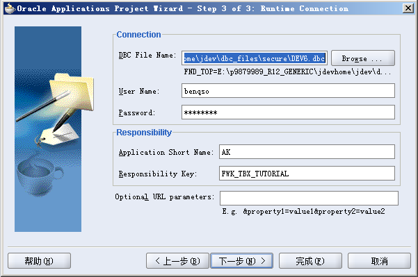

Hello World
完成本章练习后将对Oracle Application Framework的MVC的架构有一定了解, 对页面布局以及控制器Controller有了初步认识, 同时掌握调试OAF程序的技巧.
Step 1. 创建OA Workspace
菜单选择File->New，打开[New Gallery]对话框.
左边类型树选中General, 右部选中Workspace Configured for Oracle Application, 点击[OK]按钮, 此时弹出[New Oracle Application Workspace]对话框.
输入名称并确保目录位置为<JDEV_USER_HOME>\myprojects, 点击[OK]按钮完成Workspace的创建.此时若选中[Add a New OA Project]复选框, 则将打开新建OA Project向导.
Step 2. 创建OA Project
在项目树种右键OA Workspace, 在弹出的上下文菜单中选择[New OA Project]选项, 将打开新建OA Project向导. 如果出现欢迎页, 则直接点击[Next]跳过.
在向导[step 1 of 3]画面, 输入项目名称、存放地址已经包名, 点击[Next]按钮进入下一步.
在向导[step 2 of 3]画面, 如需要指定数据库连接, 则可以通过[Repository]下拉框选择在[Connections]中 已经设定的连接.
此时也可对连接进行编辑和测试连通状况.
在向导[step 3 of 3]画面, 指定数据库运行时连接, 选择DBC文件, 输入数据库用户名/密码, 并指定开发职责后, 点击[完成]按钮完成OA Project的创建.
Step 3. 设置运行时选项
双击项目目录结构中的Project节点或者右键Project节点选择[Project Properties]选项, 打开[Project Properties]对话框.
对话框左侧选项树中选中Oracle Applications->Run Options节点, 在右侧确保将[OADevelperMode]、[OADiagnostic] 两个选项加入到[Selected Options], 点击[确定]按钮进行保存.
Step 4. 创建Page
右键项目目录结构中的Project节点, 点击上下文菜单中New选项, 打开[New Gallery]对话框.
对话框左侧选项树中选中Web Tier->OA Components节点, 在右侧选中[Page]选项, 点击[OK]按钮.
[New Page]对话框中输入页面名称和package后点击[确定]按钮完成Page的创建.
项目目录结构中选中Page, 可以在Structure窗口看到页面元素的层次结构.
Step 5. 修改Page Layout(顶层)Region
选中Page, 在Structure窗口中选中自动创建的region1节点, 属性窗口会显示该Region的属性设定. 如果当前IDE没有打开属性窗口, 请选择菜单View->Property Inspector选项打开属性窗口.
在属性窗口对region1进行如下调整:
- 将ID属性设置为PageLayoutRN.
- 确保Region Style属性值为pageLayout.
- 确保Form属性值为True.
- 确保Auto Footer属性值为True.
- 将Window Title属性设置为<your name>: Hello World Window Title.
- 将Title属性设置为<your name>: Hello World Page Header.
- 设置AM Definition属性为oracle.apps.fnd.framework.server.OAApplicationModule(通用OAF Application Module)
Step 6. 创建Region
继续在Structure窗口右键PageLayoutRN, 在上下文菜单中选择New->Region, 在PageLayoutRN下创建一个自动命名为region1的Region.
选中region1, 在属性窗口对region1进行如下调整:
- 将ID属性设置为MainRN.
- 将Region Style属性设置为messageComponentLayout.
Step 7. 创建Item(输入框)
继续在Structure窗口右键MainRN, 在上下文菜单中选择New->messageTextInput, 在MainRN下创建 一个文本输入框item1.
选中item1, 在属性窗口对其进行如下调整:
- 设置ID属性为HelloName.
- 确保Item Style属性值为messageTextInput.
- 设置Prompt属性为Name.
- 设置Visual Length为20.
- 设置Data Maximum Length属性为50.
Step 8. 为按钮创建容器Region
继续在Structure窗口右键MainRN, 在上下文菜单中选择New->messageLayout, 在MainRN下创建 一个容器messageLayout1.
选中messageLayout1, 在属性窗口将其ID属性设定为ButtonLayout.
Step 9. 创建Item(按钮)
继续在Structure窗口右键ButtonLayout, 在上下文菜单中选择New->Item, 在ButtonLayout下创建 一个Item, 自动命名为item1.
选中item1, 在属性窗口对其进行如下调整:
- 设置ID属性为Go.
- 设置Item Style属性为submitButton.
- 设置Attribute Set属性为/oracle/apps/fnd/attributesets/Buttons/Go.
Step 10. 运行页面
右键页面文件, 上下文菜单中选择Run选项, 运行页面.
不出意外此时浏览器中应该可以看到如下画面.
Step 11. 添加Controller
在Structure窗口右键MainRN, 上下文菜单选择Set New Controller选项, 打开[New Controller]对话框.
在[New Controller]对话框输入Controller的名称和包, 点击[OK]按钮完成Controller创建.
Step 12. 为Controller添加控制逻辑
在项目目录结构窗口找到并双击打开我们创建的Controller的Java文件.
在代码开头引入我们需要的以下包:
import oracle.apps.fnd.framework.OAException;
为processFormRequest方法添加以下代码逻辑:
if (pageContext.getParameter("Go") != null) {
String userContent = pageContext.getParameter("HelloName");
String message = "Hello, " + userContent + "!";
throw new OAException(message, OAException.INFORMATION);
}
Step 13. 运行最终页面
右键页面文件, 上下文菜单中选择Run选项, 运行页面.
在文本框中任意输入, 点击[GO]按钮, 看下运行结果.
Step 14. 使用Debugger进行调试
如果此时你的代码没有显示行号, 可以在代码窗口左侧右击鼠标弹出上下文菜单, 选择[Toggle Line Numbers]选项来显示行号.

试着在以下代码所在行的最左侧进行鼠标左键点击, 为该句代码添加调试断点.
if (pageContext.getParameter("Go") != null)
右键页面文件, 上下文菜单中选择Debug选项, 开始运行并调试页面.
在页面点击[GO]按钮后, 代码会在我们下的断点处停止.
在工具栏点击[Step Over]按钮或直接按键盘F8, 进行单步调试, 直到以下代码行:
String userContent = pageContext.getParameter("HelloName");

不断进行单步调试, 可以在[Smart Data]页监控变量值的变化: